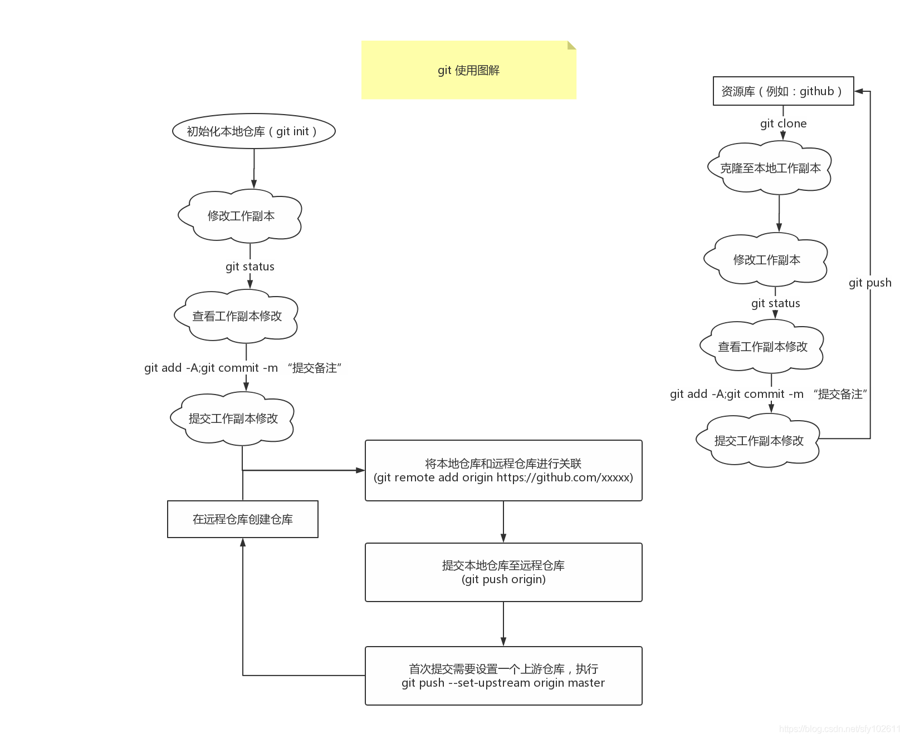

git基本操作,本博客只是最基本操作说明和相应图解

Git下载
git下载安装地址：https://git-scm.com/downloads
安装过程基本属于一路next，这里不做介绍，主要介绍git的操作命令
Git工作流程

git 基本命令
1
2
3
4
5
6
7
8
9
10
11
12
13
14
15
16
17
18
19
20
21
22
23
24
25
26
27
28
29
30
31
32
33
34
35
36
| # 将当前目录初始化为一个git仓库
git init
# 在当前目录下创建test目录，并初始化为一个git仓库
git init test
# 查看本地仓库中文件状态
git status
# 将本地文件添加至暂存区
# 当前目录下的所有文件全部添加
git add -A
# 只将当前选中的文件添加至暂存区
git add [filename]
# 将暂存区文件提交至本地仓库
git commit -m "提交备注"
# 将本地仓库关联至远程仓库
git remote add orgin https://github.com/xxxxx/xxx
# 提交本地仓库至远程仓库
git push origin
# 此时由于本地仓库没有找到上游仓库位置，git会提示设置上游仓库命令
git push --set-upstream origin master
#
# 至此，git仓库就已经提交完成，在远程仓库中可以看到和本地仓库同步的内容
# 当再次修改本地仓库内容后，可以直接使用
git add -A;git commit -m "提交备注";git push;
# 用以上命令进行代码提交同步
#
# 上图中右侧位置是已经存在远程仓库，在本地并没有创建仓库而是直接使用以下命令获取远程仓库内容
git clone [远程仓库地址]
# 然后就可以通过上述的git基本命令就行git操作
|
git切换仓库地址
1
2
3
| git remote remove origin
git remote add origin git@192.168.1.240:root/poba-angular-pc.git
git push -u origin develop
|
实现功能：
将git仓库的某个tag导出为一个分支，（tag标签导出后是无法直接编辑文件的）
在阅读github框架源码时有使用过（Spring）
1
2
3
4
5
6
7
|
git tag
git checkout tagxxx
git checkout -b branchName tagName
|
git查看分支时添加注释说明
官方git并没有此项功能，需要借助插件来实现git-br
步骤：
1
2
3
4
5
6
7
8
9
10
|
git config branch.xxxbranchName.description "添加分支说明"
git config branch.xxxbranchName.descripiton
npm i -g git-br
git br
|


Copyright 2021 sunfy.top ALL Rights Reserved